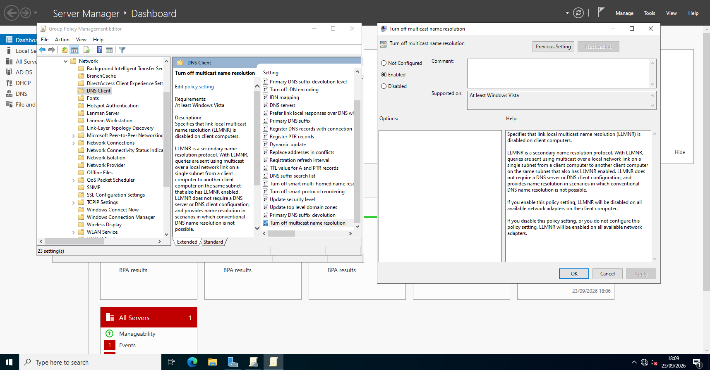
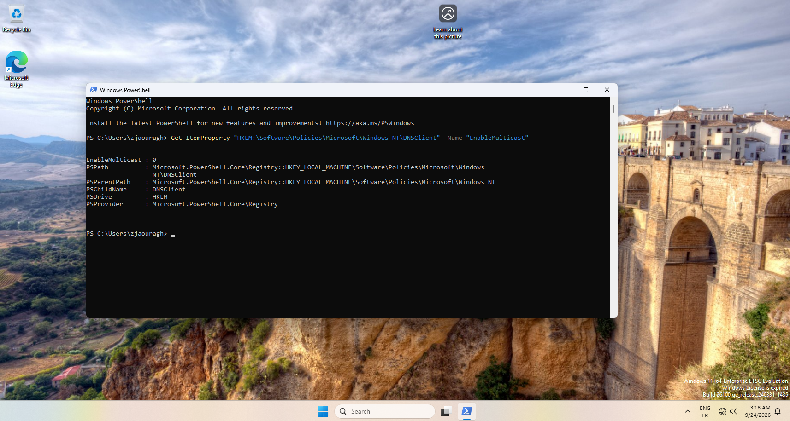
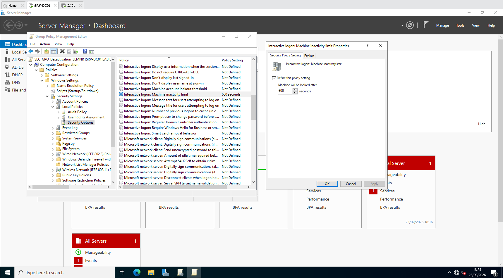
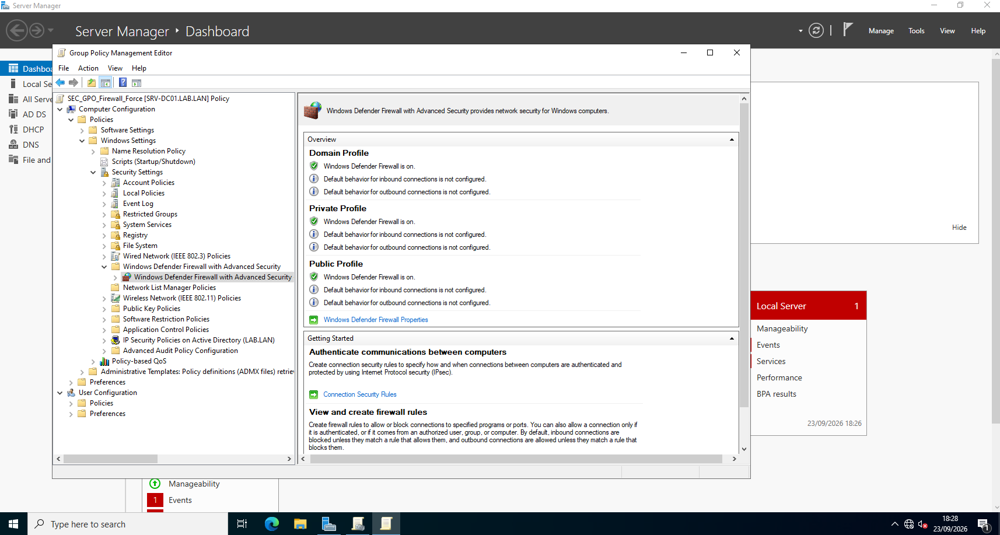
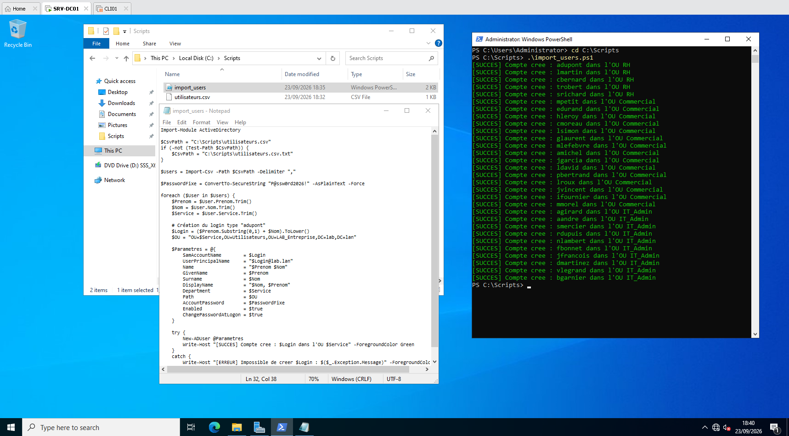
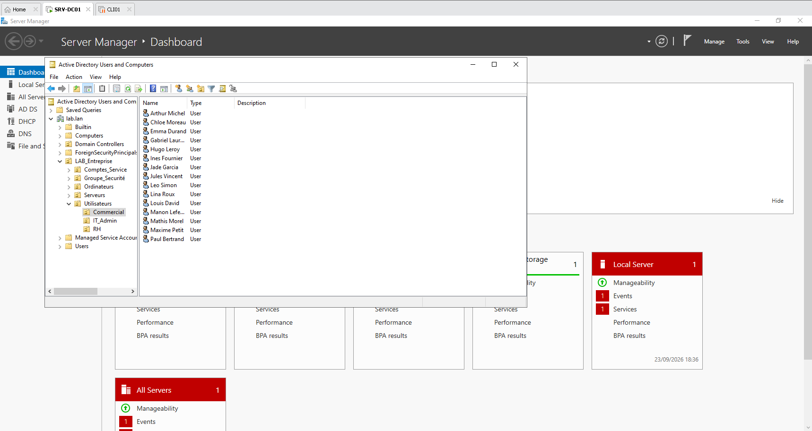
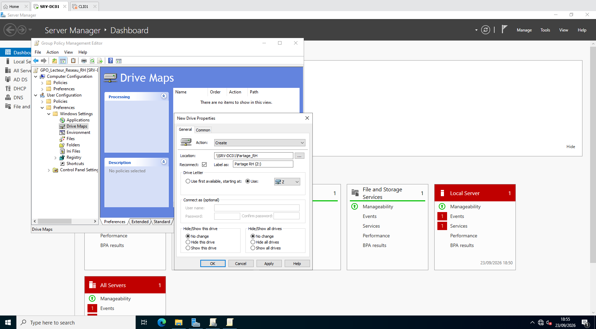
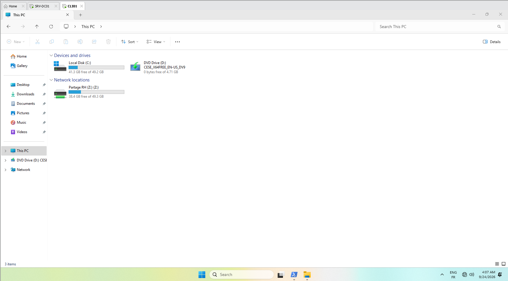

Lab 2 : Durcissement Active Directory (GPO ANSSI) & Automatisation PowerShell
Objectif d'ingénierie : Ce laboratoire documente la sécurisation avancée d'une infrastructure Active Directory sous Windows Server 2022 contre les attaques réseau courantes (Man-in-the-Middle, vol de hash NTLM), l'application de règles d'hygiène informatique (RGPD / Pare-feu), le provisionnement massif d'utilisateurs par script PowerShell et le déploiement ciblé de ressources partagées par GPO Preferences.
1. Durcissement Réseau : Désactivation du protocole LLMNR (Anti-Poisoning)
Par défaut, les systèmes Windows diffusent des requêtes en clair via le protocole LLMNR en cas d'échec de résolution DNS locale. Un attaquant présent sur le segment réseau peut écouter et empoisonner ces requêtes (via des outils tels que Responder) pour capturer des hashs NetNTLMv2.
Une Stratégie de Groupe de niveau domaine a été créée pour éteindre ce protocole :

Activation du paramètre système « Turn off multicast name resolution » :

Validation dans la base de registre du client Windows 11 :
Vérification par requête directe dans la ruche de registre système locale (HKLM) confirmant la prise en compte de la politique de sécurité avec la valeur 0 :

2. Sécurité Physique & Conformité RGPD : Verrouillage Automatique
Afin de lutter contre les accès physiques non autorisés lors de l'abandon de poste, une politique d'ouverture de session interactive impose le verrouillage automatique de l'écran après 600 secondes (10 minutes) d'inactivité clavier/souris :

3. Défense en Profondeur : Verrouillage du Pare-Feu Windows Defender
Pour interdire toute neutralisation locale du pare-feu par des utilisateurs non avertis, une GPO centralisée force l'activation continue du pare-feu avec fonctions avancées de sécurité sur l'intégralité des profils (Domaine, Privé, Public) :

4. Automatisation Industrielle : Provisionnement Massif via PowerShell
Pour éliminer les tâches chronophages et les erreurs de saisie lors des arrivées massives de collaborateurs, un script PowerShell modulaire a été développé pour intégrer 30 employés à partir d'un fichier d'extraction RH (utilisateurs.csv).
Fonctionnalités du script d'ingénierie :
-
Parsing dynamique du fichier CSV.
-
Génération automatisée du login normalisé (
initiale-prenom + nom). -
Chiffrement en mémoire du mot de passe via objet sécurisé
.NET(ConvertTo-SecureString). -
Affectation dynamique dans l'Unité d'Organisation cible (
RH,Commercial,IT_Admin). -
Forçage du renouvellement de mot de passe lors de la première connexion.

Contrôle de conformité dans l'annuaire Active Directory :
Les comptes sont créés et compartimentés instantanément dans leurs services respectifs :

5. Déploiement Ciblé de Ressources Réseau (GPO Preferences)
Un partage sécurisé SRV-DC01Partage_RH a été créé avec des droits d'accès restreints aux seuls membres du service RH (permissions de Modification, exclusion du Contrôle Total pour les utilisateurs standards).
Grâce aux Group Policy Preferences (GPP), le lecteur réseau Z: est monté automatiquement à l'ouverture de session des seuls collaborateurs de l'OU RH :

Validation en session utilisateur sur Windows 11 Enterprise :
Connexion avec le compte de domaine adupont (Alice Dupont) et constat de la présence du lecteur réseau partagé opérationnel :

Bilan Opérationnel du Projet 2 :
Ce laboratoire valide la transition vers l'administration d'infrastructure moderne : l'annuaire est durci contre les attaques réseau par rebond, l'administration est automatisée sans intervention manuelle et le déploiement des ressources est dynamique et cloisonné.